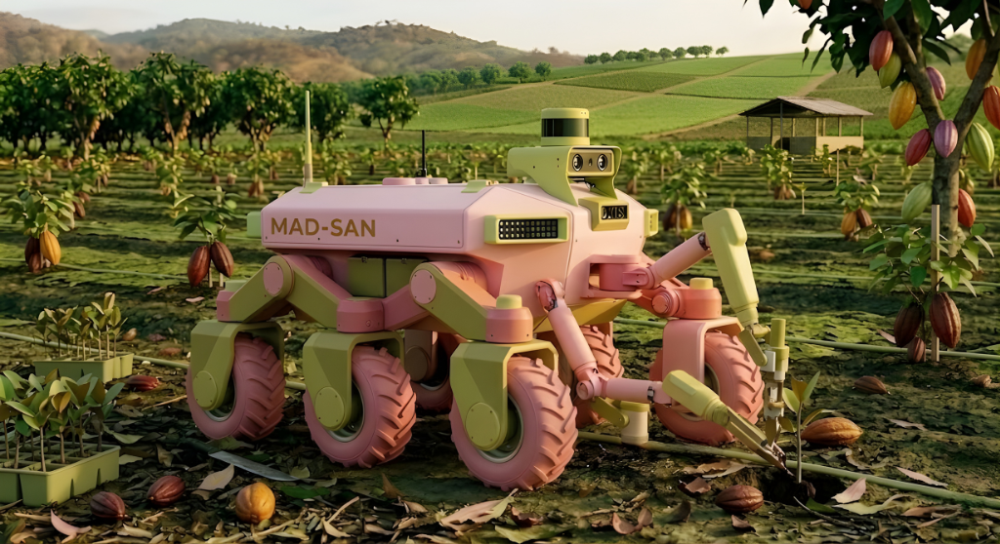
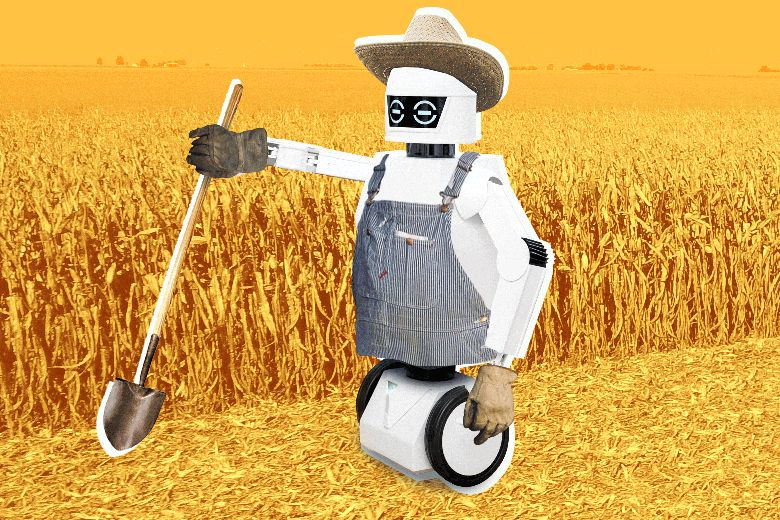

SCROLL DOWN
Nos encontramos ejecutando la Fase 1: Investigación y análisis. Durante este periodo realizamos la búsqueda profunda de información sobre robótica agrícola, sistemas de siembra y tecnologías en robots móviles. Analizamos proyectos implementados en otros países y logramos identificar con precisión los componentes mecánicos y electrónicos necesarios para nuestro prototipo funcional.
Componentes principales definidos para la construcción del Rover de siembra automatizada:

Nos encontramos ejecutando la Fase 1: Investigación y análisis. Realizamos la búsqueda profunda de información sobre robótica agrícola, sistemas de siembra y tecnologías en robots móviles. Analizamos proyectos implementados en otros países y logramos identificar los componentes mecánicos y electrónicos necesarios para nuestro prototipo funcional.

El sistema se basa en instrucciones de navegación exactas. El Rover parte de (0,0), avanza a (10,0) y desde ahí hasta (10,20) activa la siembra cada 50 cm. Al terminar gira 90° y repite el ciclo para garantizar una distribución perfecta.
Para garantizar la precisión en el terreno, el robot agrícola integra sensores de navegación, incluyendo la posible incorporación de un módulo GPS para ubicarse exactamente en el área de cultivo.
Adicionalmente, bajo el enfoque de agricultura de precisión, el sistema proyecta el uso de sensores para recolectar información vital del entorno, permitiendo monitorear variables como las condiciones del suelo, el clima y la humedad.
La fuerza motriz del Rover proviene de motores DC, los cuales son regulados por controladores de motores dedicados para sortear terrenos agrícolas irregulares, secos o pantanosos.
Toda la demanda energética del hardware (microcontrolador, sensores y actuadores mecánicos) es suministrada por una batería de alimentación, la cual le otorga al robot la autonomía necesaria para operar de manera independiente en el campo.
Independientemente de que el cerebro del MAD-SAN sea un microcontrolador (sistema embebido), el proyecto aplica conceptos fundamentales de los PLC mediante la implementación de un sistema de control programable para automatizar tareas repetitivas.
El sistema opera leyendo entradas (datos de los sensores de navegación/GPS) y ejecutando un algoritmo secuencial para accionar salidas físicas (los motores DC y la garra dispensadora). Sigue una lógica de automatización por pasos estrictos: posicionarse, avanzar una distancia específica, detenerse, accionar el efector mecánico para sembrar, y girar.
El proyecto se inscribe firmemente en la agricultura de precisión, un pilar del IoT industrial, que busca optimizar los recursos mediante sensores y herramientas automatizadas.
El robot MAD-SAN funciona como un dispositivo inteligente en el campo capaz de recolectar información en tiempo real sobre las condiciones de la tierra, la temperatura y la humedad. Aunque el documento reconoce que un desafío para esta tecnología es la falta de infraestructura de internet estable en zonas rurales, el paradigma IoT se cumple al transformar un simple vehículo en un nodo de recolección de datos y monitoreo que reemplaza la supervisión manual del cultivo.
Conoce a fondo los objetivos, la problemática que resolvemos y la justificación detrás de la innovación de MAD-SAN a través de nuestra presentación oficial del proyecto.
Información técnica y teórica detallada: antecedentes de robótica agrícola, diagrama de Gantt, marco metodológico y justificaciones del sistema.